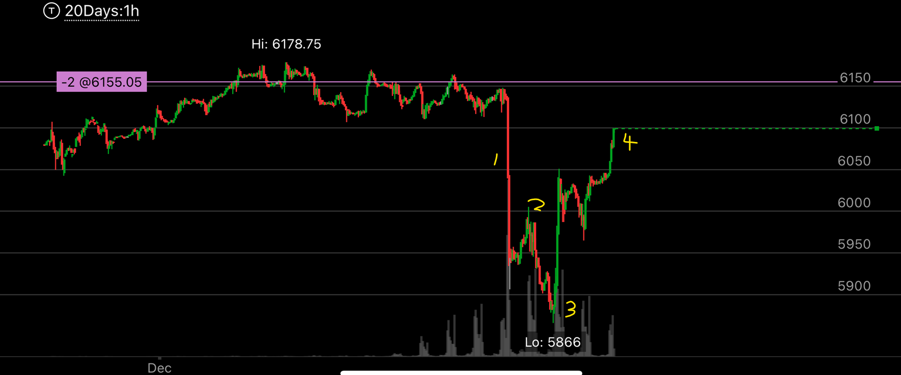
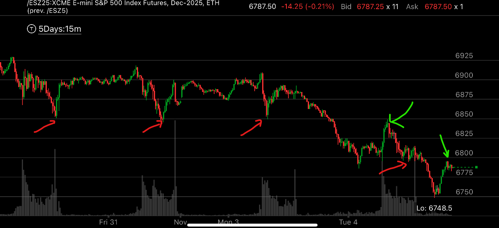

反弹中，反弹到前面的阻力点
- 大盘在下跌过程中，会出现低点更低，高点更高的反弹，这时，这个反弹点，很可能是前面的阻力点。可以充分利用这一点
- 这个一般发生在下跌的初期，到了后面，就不再反弹，这样就是底部了。

图示:
- 大盘在高位长时间徘徊后，快速大幅下跌
- 在低点，立刻反弹。
- 反弹后，很快下跌，创新低，再次反弹，可以想到，这个反弹会更高
- 反弹的高点，应该接近前面的阻力点，也就是快速下跌之前徘徊的范围

图示:
- 红色表示阻力点，绿色箭头表示反弹到阻力点。
- 前面大盘在6850不断的反弹，一旦大跌后，它反弹到了6850附近，才下去。
- 前面大盘在6800震荡很久，一旦大跌后，它反弹到了6800附近，才下去。。